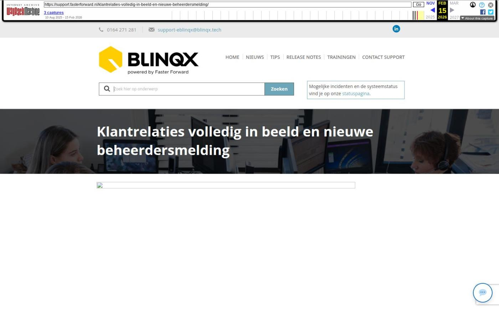

Klantrelaties volledig in beeld en nieuwe beheerdersmelding

Tekstinhoud
Op dinsdag 8 juli zijn Elements en eBlinqx weer verbeterd en uitgebreid met nieuwe features. Deze release bevat een beheerdersmelding van zkr. en een eigen risico boeking koppelen aan een schademelding. Ook is er een nieuwe feature alleen voor eBlinqx, namelijk een duidelijk overzicht van de klantrelaties en hierop kunnen doorklikken.
eBlinqx Only
Duidelijk overzicht klantrelaties
Tabbladen verduidelijkt
Betalingsoverzicht opgenomen in factuur verzenden
Elements en eBlinqx
Melding actieve Uwkluis verduidelijkt
Foutmelding klantonderzoek als beheerdersmelding
Eigen risico boeking koppelen aan schademelding
Gebruikersaccounts zelf beheren
Overige verbeterpunten
eBlinqx Only
Duidelijk overzicht klantrelaties
Let op: alleen beschikbaar in eBlinqx
Vanaf nu wordt op de startpagina van een particulier klantdossier weergegeven met welke dossiers de relatie in het klantdossier nog meer verbonden is. Zo kan je in één oogopslag zien in welke dossiers de klant bijvoorbeeld de eigenaar of contactpersoon is van een bedrijf of welk dossier van zijn ouders is. Vanuit hier kan je doorklikken naar het andere dossier. De link met de andere particuliere dossiers wordt gelegd aan de hand van de persoon relaties onder een persoon. De verbinding van het particuliere dossier met het zakelijke dossier wordt gemaakt doordat de persoon is gekoppeld aan de organisatie. Op dit moment wordt in het zakelijke dossier de relaties met andere dossiers nog niet weergegeven.
Tabbladen verduidelijkt
Let op: alleen beschikbaar in eBlinqx
Er wordt nu gebruik gemaakt van de gehele breedte van de pagina om de tabbladen te tonen. Op deze manier worden de tabbladen 'Export', 'Schademelding' en 'Financieel' meestal direct getoond, zodat je deze gemakkelijk kunt openen. Voorheen stonden deze tabbladen vaak onder het tabblad 'Meer'. Daarnaast blijft het tabblad 'Meer' continue zichtbaar. Deze wordt niet meer overlapt door de opties die eronder staan. Zo is het duidelijk dat je onder het tabblad 'Meer' aan het navigeren bent.
Betalingsoverzicht opgenomen in factuur verzenden
Let op: alleen beschikbaar in eBlinqx
In producten met incassowijze Tussenpersoon kan je vanaf nu bij het veld 'Factuur verzenden bij' aangeven dat dit 'Betalingsoverzicht' is. Kies je hiervoor dan wordt de factuur niet verzonden naar de klant. Ook kan je in de ADN batch zien dat je voor deze optie hebt gekozen. Bij de post staat dan een rood papiericoon.
Elements en eBlinqx
Melding actieve Uwkluis verduidelijkt
Bij het aanmaken van de uitnodiging Uwkluis verschijnt er een melding als er met dat e-mailadres en mobiel nummer al een Uwkluis account bestaat. Aan deze melding is nu toegevoegd in welk dossier dit account aanwezig is. Let op: dit is niet van toepassing als de setting voor meerdere dossiers Uwkluis op één e-mailadres aanstaat. Dan is het wel mogelijk om in meerdere dossiers op hetzelfde e-mailadres een Uwkluis te hebben en zal de melding niet verschijnen.
Foutmelding klantonderzoek als beheerdersmelding
Vanaf nu verschijnt er een beheerdersmelding als er niet genoeg credits zijn bij zkr. om het klantonderzoek uit te voeren. Op deze manier wordt je hierop geattendeerd en kan je actie ondernemen.
Eigen risico boeking koppelen aan schademelding
Het is nu mogelijk om een eigen risico boeking (TP incasso) te koppelen aan een schademelding. Zo kan deze opgenomen worden op de factuur. De eigen risico boeking maak je aan via het tabblad TP incasso boekingen onder het product – knop 'Eigen risico factureren'. In het volgende scherm kan je de boeking koppelen aan de schademelding. Het veld 'Polis' wordt dan automatisch gevuld. Wil je de boeking niet koppelen aan een schademelding dat zet je deze op 'Geen'.
Gebruikersaccounts zelf beheren
Op dit moment zijn wij druk bezig met het ontwikkelen van het zelf kunnen beheren van gebruikersaccounts. Als interne beheerder kan je dan zelf gebruikersaccounts aanmaken wanneer er bijvoorbeeld een nieuwe collega start. Ook kan je zelf accounts beëindigen wanneer deze niet langer benodigd zijn. Zo heb je dit helemaal in eigen beheer. We willen op korte termijn starten met een pilot. Heb je interesse om deel te nemen aan deze pilot? Stuur dan een e-mail naar support-eblinqx@blinqx.tech.
Overige verbeterpunten
Voor het rekeningnummer wat wordt geselecteerd bij het aanmaken van een incassobatch moet een incassantID staan ingesteld. Is dit niet het geval dan wordt er een melding getoond, zodat je hierop wordt geattendeerd
Een Finly formulier wordt nu ook uit Uwkluis verwijderd indien deze in eBlinqx of Elements wordt verwijderd
De risicodragers rechts in de productkaart worden nu volledig alfabetisch getoond in het dropdownmenu
Geplaatst op 4 juli 2025
Laatste 5 releasenotes
Verbeteringen onder de motorkap en gespreksopnames »
HDN release: afscheid van HDN certificaten »
Verbeterde verwerking van grote e-mailvolumes via Office 365 en voorbereiding HDN »
Nu zelf schade- en levensverzekeringen omnummeren »
Verbeteringen onder de motorkap en type documenten gecontroleerd »